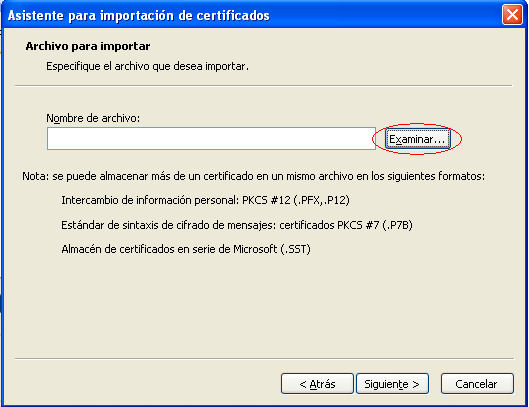
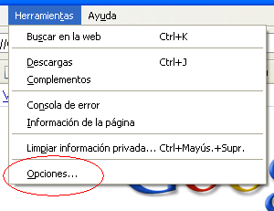
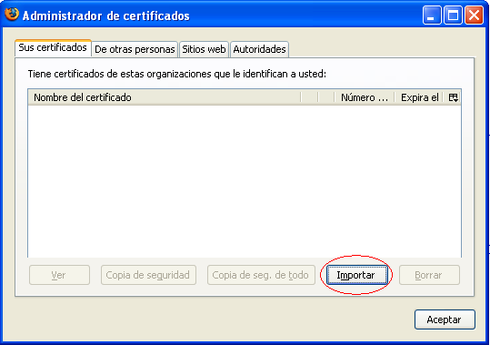
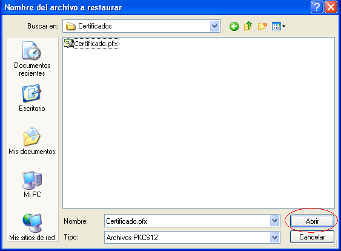
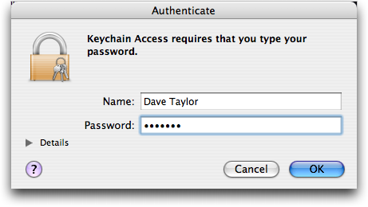
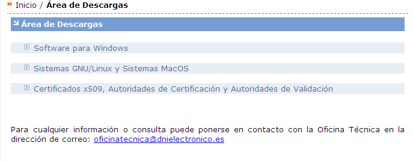
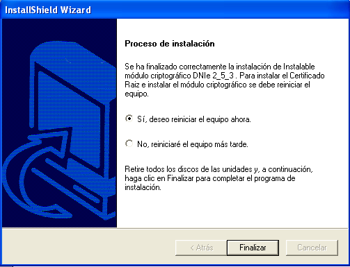
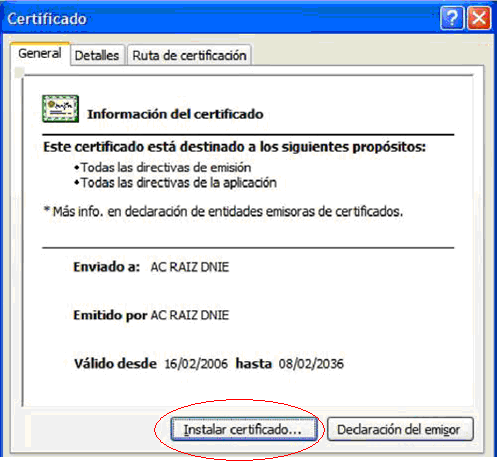
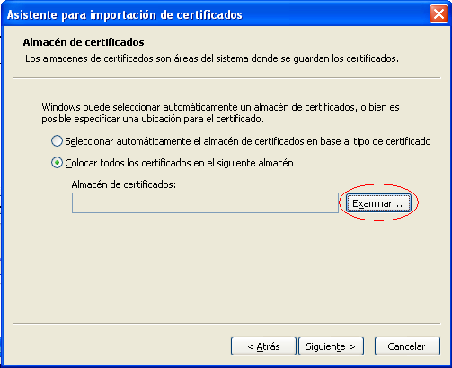
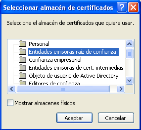

<
Esta obra está bajo una licencia Creative Commons Reconocimiento-NoComercial-CompartirIgual 3.0 Unported.
Índice
1. Introducción [4](#introducción)
2. Objeto del documento [5](#objeto-del-documento)
3. Requisitos mínimos [6](#requisitos-mínimos)
4. Guía de Uso [7](#guía-de-uso)
Perfiles de usuario [9](#perfiles-de-usuario)
Opciones de configuración [10](#opciones-de-configuración)
Firma electrónica [16](#firma-electrónica)
Contrafirma [21](#contrafirma)
Multifirma Masiva [24](#multifirma-masiva)
Validación de firmas [30](#validación-de-firmas)
Cifrado de datos [32](#cifrado-de-datos)
Contraseña de cifrado [33](#contraseña-de-cifrado)
Clave de cifrado [34](#clave-de-cifrado)
Almacén de claves de cifrado [35](#almacén-de-claves-de-cifrado)
Descifrado de datos [37](#descifrado-de-datos)
Contraseña de cifrado [38](#contraseña-de-cifrado-1)
Clave de cifrado [39](#clave-de-cifrado-1)
Ensobrado digital [41](#ensobrado-digital)
Desensobrado digital [46](#desensobrado-digital)
5. Política de firma de la AGE [48](#política-de-firma-de-la-age)
6. Factura electrónica [49](#factura-electrónica)
7. Instalación de Certificados. [50](#instalación-de-certificados.)
DNIe (DNI Electrónico) [60](#dnie-dni-electrónico)
Otros certificados [67](#otros-certificados)
8. Resolución de Problemas [68](#resolución-de-problemas)
9. Glosario de términos [69](#glosario-de-términos)
Creative Commons [74](#Licencia_Creative_Commons)
Introducción
La Interfaz de Escritorio del Cliente @firma es una aplicación de escritorio que permite acceder a las distintas funcionalidades criptográficas del Cliente @firma sin necesidad de instalarlo ni ejecutar el navegador Web.
La interfaz de escritorio está orientada a un uso personal de las distintas funciones criptográficas de las que dispone y no como parte de una tramitación Web. Se facilita su uso por medio de asistentes que explican cada paso a seguir para la realización de una operación y, al contrario que el Cliente @firma, desde la Interfaz de Escritorio es posible decidir a qué almacén de certificados deseamos acceder.
La interfaz de escritorio hace uso de los certificados digitales X.509 y de las claves privadas asociadas a los mismos que estén instalados en alguno de los almacenes de certificados del sistema o en un almacén en fichero. Los almacenes soportados son:
-
Almacén de Windows / Internet Explorer
-
Almacén de Mozilla Firefox
-
Almacén de Mac OS X
-
Almacén en fichero P12/PFX
También es posible utilizar dispositivos de firma externos como el DNIe, para lo cual es necesario configurar estos dispositivos en el almacén de certificados desde el que se desee utilizar.
Objeto del documento
El objeto del presente documento es explicar el procedimiento básico para la realización de las distintas operaciones criptográficas soportadas por la interfaz de escritorio del Cliente @firma:
-
Firma electrónica
-
Multifirma
-
Multifirma masiva
-
Cifrado de datos
-
Descifrado de datos
-
Ensobrado digital
-
Desensobrado digital
Adicionalmente, se detalla el procedimiento que debe seguir el usuario para la instalación de certificados electrónicos en los distintos almacenes soportados.
Requisitos mínimos
Sistema operativo:
-
XP, Vista, 7, Server 2003, Server2008
-
Linux (Guadalinex, Ubuntu)
-
MacOS X 10.6, 10.7
-
Sun Solaris / OpenSolaris 10
Máquina virtual Java:
- JRE 1.6 update 30 o superior
Certificado digital de usuario instalado en el almacén que se desee utilizar o disponible a través de un módulo PKCS#11 configurado en el sistema (por ejemplo el DNIe).
Guía de Uso
La interfaz de escritorio del Cliente @firma es una aplicación independiente que puede utilizarse sin necesidad de que el propio Cliente esté instalado en el sistema del usuario. Para la ejecución de esta interfaz es necesario cumplir con los requisitos detallados en el apartado “Requisitos mínimos” del presente documento.
La vista principal de la interfaz de escritorio es:
<
En ella se muestra una serie de pestañas que permiten acceden a distintas funcionalidades de la Interfaz de Escritorio del Cliente @firma. Estas son:
-
Firma: Para la realización de firmas electrónicas.
-
Multifirma: Para la realización de cofirma y contrafirmas.
-
Validación: Para la validación de firmas a nivel de estructura y la extracción de los datos firmados.
-
Cifrado: Para el cifrado de datos.
-
Descifrado: Para el descifrado de datos.
Adicionalmente, es posible habilitar el resto de opciones disponibles activando la vista avanzada de la Interfaz desde la pantalla de opciones (ver apartado “Opciones de configuración”), con lo cual la interfaz aparecería como sigue:
<
En la vista avanzada nuevas opciones que dan acceso a otras de las funciones criptográficas del Cliente @firma. Las nuevas opciones disponibles son:
-
Firma Masiva: Para la realización de operaciones de firma y multifirma sobre una gran cantidad de ficheros simultáneamente.
-
Ensobrado: Para la generación de sobres digitales.
-
Desensobrado: Para el extraer los documentos de los sobres digitales.
Adicionalmente, la vista avanzada desbloquea nuevas opciones en elemento de las pestañas de la vista simple. Estas son:
-
Los formatos de firma “XAdES Enveloping” y “XAdES Enveloped”.
-
El modo de cifrado/descifrado mediante claves.
-
Algoritmos de cifrado/descifrados distintos de:
-
SHA1 con 3Des (para el cifrado/descifrado mediante contraseñas).
-
AES (para el cifrado/descifrado mediante claves).
-
La interfaz de escritorio dispone de un sistema de ayuda integrado. Cuando el usuario tiene alguna duda sobre el objetivo de un componente de la interfaz puede seleccionarlo y pulsar el botón “F1” de su teclado. El sistema de ayuda se activará y le mostrará la ayuda relativa al componente seleccionado.
Perfiles de usuario
La interfaz de escritorio del Cliente @firma permite configurar perfiles de usuario en los que se almacenan las opciones de configuración establecidas por este. Al arrancar la aplicación, si ya definió algún perfil de usuario, se le mostrará un diálogo para la selección del perfil. En este diálogo, deberá seleccionar el perfil que desee cargar y pulsar el botón Aceptar.
<
Puede crear nuevos perfiles de usuario, o editar y eliminar los existentes, desde la ventana de opciones de configuración de la interfaz de escritorio. Consulte el apartado “Opciones de configuración” para más información.
Opciones de configuración
Es posible acceder a las opciones de configuración de la Interfaz de Escritorio del Cliente @firma por medio del elemento “Opciones” del menú “Herramientas”.
<
Las opciones disponibles en la ventana de Opciones, por medio de cada una de sus pestañas, son:
- General:
<
-
General:
-
Habilitar opciones de configuración avanzadas
Esta opción habilita la vista y opciones avanzadas de la Interfaz de Escritorio.
-
-
Criptografía:
-
Algoritmo de huella digital por defecto:
Es el algoritmo que se debe utilizar para ejecutar las firmas electrónicas. Por defecto se utilizará SHA-1 (SHA1withRSA). No se recomienda modificar este valor salvo que se esté seguro que el formato de firmas y el almacén de certificados que se desea utilizar soportan este algoritmo.
-
Utilizar también este algoritmo para las referencias internas XML.
Esta opción permite que las referencias internas de las firmas XML se realicen con el algoritmo seleccionado.
-
-
Política de firma
-
Configurar política de firma
Habilita la creación de firmas EPES. Esta configuración aplica a firmas en formato CAdES, XAdES y PAdES.
-
Identificador de la política (OID)
OID identificador de la política de firma.
-
Calificador de la política de firma (URL)
URL con la localización de la política de firma.
-
Huella digital SHA1
Huella digital declarada para la política de firma.
-
Consulte la documentación de su política de firma para conocer los valores predefinidos para cada propiedad de la política. Puede consultar las opciones de configuración de la política de firma de la AGE en el apartado “Política de firma de la AGE” del presente documento.
Para la generación de firmas de facturas electrónicas no es necesario configurar la política de firma, basta con configurar el formato de firma de facturas electrónicas, ya que este establece internamente los atributos de la política. Cualquier configuración de política de firma establecida a través de este diálogo se ignorará al generar firmas en formato de factura electrónica.
- Configuración de firma
<
-
Firmas de documentos PDF:
-
Motivo / razón de la firma electrónica.
Establece el motivo asociado a las firmas PDF que se generen.
-
Lugar donde se realiza la firma electrónica.
Establece la localización asociada a las firmas PDF que se generen.
-
Datos de contacto del firmante.
Establece la información de contacto de quien genera la firma PDF.
-
Formato PAdES.
Establece el tipo de firmas PAdES que se generarán. Las opciones posibles son
-
-
PAdES Básico (Necesario si queremos generar varias firmas sobre el mismo PDF)
-
PAdES BES
- Accesibilidad
<
-
Texto:
-
Grande
Aumenta el tamaño del texto para facilitar su legibilidad.
-
Negrita
Configura que el texto por defecto aparezca en negrita.
-
-
Combinación de colores:
-
Alto contraste
Habilita el modo alto contraste para la aplicación.
-
-
Gestión del foco
-
Remarcar elementos con foco
Remarca los componentes que reciben el foco.
-
-
Ventana
-
Maximizar todas las ventanas
Maximiza todas las ventanas de la aplicación para mejorar su visibilidad.
-
-
Cursos de texto
-
Grande
Aumenta el tamaño del cursor de texto para facilitar su localización.
-
-
Valores por defecto
Restablece la configuración por defecto de accesibilidad.
-
Aplicar
Aplica a la interfaz la configuración de accesibilidad introducida.
- Perfiles de usuario
<
-
Perfil actual
- Perfil actual cargado.
-
Perfiles
-
Perfiles disponibles
Listado de perfiles de usuario disponibles. Cada perfil tiene asociado valores para cada una de las opciones de configuración de las pestañas General, Contexto de firma y Accesibilidad de la ventana de opciones.
-
Cargar
Carga el perfil seleccionado, restableciendo las opciones configuradas para ese perfil.
-
Eliminar
Elimina el perfil seleccionado. Se pedirá confirmación al usuario antes de proceder a la eliminación.
-
-
Guardar
Guarda las opciones de configuración establecidas actualmente en las pestañas General, Contexto de firma y Accesibilidad en el perfil actual de usuario. Si el perfil actual es el Predeterminado, se creará un nuevo perfil tal como ocurriría con la opción Guardar como.
-
Guardar como
Crea un nuevo perfil de usuario con las opciones de configuración establecidas actualmente. Se le pedirá al usuario que inserte el nombre del nuevo perfil.
-
Firma electrónica
Desde la pestaña “Firma” es posible realizar firmas electrónicas sobre un documento local o remoto en diversos formatos.
<
Las opciones disponibles son:
-
Fichero a firmar digitalmente:
- Permite seleccionar el fichero que se desea firmar. Es posible pulsar el botón “Examinar” para buscar un fichero en disco o escribir directamente su ruta (local o remota) en la caja de texto asociada.
-
Almacén de certificados:
-
Permite seleccionar el almacén en donde se encuentra el certificado que deseamos utilizar para realizar la firma. Las opciones disponibles son:
-
Windows / Internet Explorer: Para tomar el certificado del almacén de Windows o un dispositivo externo (por ejemplo, el DNIe) instalado en el sistema.
-
Mozilla Firefox (unificado): Para tomar el certificado del almacén de Firefox o un dispositivo externo (por ejemplo, el DNIe) configurado en este almacén.
-
PKCS#12 / PFX: Para tomar el certificado de un almacén en disco en formato P12 o PFX.
-
-
-
Formato:
-
Permite seleccionar el formato de firma electrónica. Los formatos disponibles son:
-
Firma estándar (XAdES Detached): Principal formato de firma avanzada XML utilizado en la Administración Pública.
-
XAdES enveloping: Sólo disponible en la vista avanzada. Formato de firma avanzada XML.
-
XAdES enveloped: Sólo disponible en la vista avanzada. Formato de firma avanzada XML. Sólo permite firmar ficheros XML.
-
CAdES: Formato de firma avanzada binaria. Permite decidir si se deben incluir los datos firmados dentro del fichero de firma.
-
PAdES: Formato de firma avanzada para documentos PDF. Sólo permite firmar este tipo de documentos.
-
Factura Electrónica: Formato específico para la firma de facturas electrónicas acordes la versión 3.1 del esquema de factura. Este formato configura todas las propiedades necesarias (incluida la política de firma) para que las firmas sean correctamente validadas por los validadores de facturas.
-
ODF (Open Document Format): Formato de firma de documentos ODF. Estos son los documentos generados por las suites ofimáticas “OpenOffice.org” y “LibreOffice”. Los formatos soportados son: “.odt”, “.ods” y “.odp”.
-
OOXML (Office Open XML): Formato de firma de documentos OOXML. Estos son los documentos generados por la suite ofimática “Microsoft Office” 2007 y 2010. Los formatos soportados son: “.docx”, “.xlsx”, “.pptx” y “.ppsx”. La Plataforma servidora @firma y la herramienta VALIDe no validan este tipo de firmas.
-
-
Para ejecutar la operación pulse el botón “Firmar”. A continuación se le mostrará un diálogo modal para la selección del certificado que desea utilizar para la firma.
<
Si la operación finalizó correctamente, se le mostrará un diálogo para el guardado de la firma electrónica generada.
Tenga en cuenta que si el almacén de certificados seleccionado está protegido con contraseña, se le solicitará esta antes de poder acceder al listado de certificados.
<
Todas las firmas generadas a través de esta interfaz incluyen los datos firmados dentro del fichero de firma (firma implícita), a excepción de la firmas en formato CAdES en donde se da a elegir esta característica a través del diálogo:
<
Multifirma
Desde la pestaña “Multifirma” es posible realizar cofirmas y contrafirmas sobre firmas electrónicas ya generadas. Esto es, agregar nuevos firmantes a firmas ya existentes, ya sea para aprobar también el documento (cofirmas) o aprobar una o varias de las firmas ya existentes (contrafirmas).
<
Las opciones disponibles son:
-
Almacén / repositorio de certificados:
-
Permite seleccionar el almacén en donde se encuentra el certificado que deseamos utilizar para realizar la firma. Las opciones disponibles son:
-
Windows / Internet Explorer: Para tomar el certificado del almacén de Windows o un dispositivo externo (por ejemplo, el DNIe) instalado en el sistema.
-
Mozilla Firefox (unificado): Para tomar el certificado del almacén de Firefox o un dispositivo externo (por ejemplo, el DNIe) configurado en este almacén.
-
PKCS#12 / PFX: Para tomar el certificado de un almacén en disco en formato P12 o PFX.
-
-
-
Tipo de multifirma
-
Agregar nueva firma (Cofirma): Permite agregar nuevas firmas a un documento de firmas. En el caso de las firmas PDF, ODF y OOXML. Para agregar nuevas firmas al documento basta con firmarlo múltiples veces a través de la pestaña “Firma” de la interfaz.
-
Refrendar una firma (Contrafirma): Permite firmar firmas anteriores de un documento de firmas.
Al pulsar el botón “Firmar” se abrirá un asistente para la generación de la multifirma. Este asistente variará según se haya decidido realizar una cofirma o una contrafirma.
-
Cofirma
Esta opción nos mostrará un asistente para la generación de una cofirma electrónica. A lo largo de varios pasos se nos explicará en que consiste esta operación y se nos solicitarán los datos necesarios para ejecutarla:
<
Al pulsar el botón “Siguiente >” accederemos a la primera pantalla del asistente, en donde deberemos seleccionar el documento que deseamos firmar y el fichero con el resto de firma generadas.
<
Al pulsar el botón “Siguiente >” se nos mostrará un diálogo para la selección del certificado que dese utilizar para la cofirma. Seleccione el certificado deseado y a continuación se le mostrará un segundo diálogo para el guardado de la multifirma generada o, en caso de error, una ventana con el mensaje de error correspondiente.
Contrafirma
Esta opción nos mostrará el asistente para la generación de una contrafirma electrónica. A lo largo de varios pasos se nos explicará en que consiste esta operación y se nos solicitarán los datos necesarios para ejecutarla:
<
Al pulsar el botón “Siguiente >” accederemos a la primera pantalla del asistente, en donde deberemos seleccionar el fichero con las firmas que deseemos contrafirmar.
<
Al pulsar “Siguiente >” no aparecerá una nueva pantalla en donde se nos mostrará el árbol de firmas de documento y deberemos indicar cuáles de ellas queremos contrafirmar.
<
Las opciones disponibles en esta pantalla son:
-
Firmas que desea contrafirmar:
-
Permite seleccionar las firmas que se desean contrafirmar. Los valores posible son:
-
Firmas seleccionadas: Contrafirma todas las firmas que seleccionadas en el árbol de firmas.
-
Firmantes seleccionados: Contrafirma todas las firmas de los autores de los cuales se ha seleccionado al menos una firma en el árbol de firmas.
-
Todo el árbol de firmas: Contrafirmas todas las firmas.
-
Firmas de último nivel: Contrafirma todas las firmas que no tienen todavía ninguna contrafirma.
-
-
-
Árbol de firmas:
-
Listado en forma de árbol de todas las firmas contenidas en el fichero de firma seleccionado anteriormente. Para seleccionar una firma, basta con hacer clic sobre la misma, para seleccionar más de una, mantenga pulsada la tecla Control (“Ctrl”) al seleccionarlas y para seleccionar varias firmas consecutivas, mantenga pulsada la tecla Mayúsculas (“Shift”) y seleccione la primera y última del rango.
Al pulsar el botón “Siguiente >” se nos mostrará un diálogo para la selección del certificado que dese utilizar para la firma. Seleccione el certificado deseado y a continuación se le mostrará un segundo diálogo para el guardado de la multifirma generada o, en caso de error, una ventana con el mensaje de error correspondiente.
-
Multifirma Masiva
Desde la pestaña “Firma masiva” es posible realizar firmas y multifirmas en bloque. Esto implica ordenar una operación de firma que afectará a múltiples ficheros y generará un nuevo fichero de firma para cada uno de ellos.
Esta pestaña sólo está disponible en el modo de vista avanzada.
IMPORTANTE: El DNIe exige que el usuario acepte individualmente toda y cada una de las firmas individuales del proceso de firma masiva.
<
Las opciones que se muestran en esta pantalla son:
-
Almácen / repositorio de certificados.
-
Permite seleccionar el almacén en donde se encuentra el certificado que deseamos utilizar para realizar la firma. Las opciones disponibles son:
-
Windows / Internet Explorer: Para tomar el certificado del almacén de Windows o un dispositivo externo (por ejemplo, el DNIe) instalado en el sistema.
-
Mozilla Firefox (unificado): Para tomar el certificado del almacén de Firefox o un dispositivo externo (por ejemplo, el DNIe) configurado en este almacén.
-
PKCS#12 / PFX: Para tomar el certificado de un almacén en disco en formato P12 o PFX.
-
-
-
Opciones de la firma por lotes
- Alerta sonora al finalizar el proceso: Utiliza el beep del sistema para emitir un sonido una vez finaliza el proceso de firma masiva.
Al pulsar el botón “Firmar” se abrirá el asistente para finalizar la configuración de la operación de multifirma masiva.
<
Al pulsa el botón “Siguiente >”, nos aparece una nueva ventana donde se nos explica el proceso según la operación de firma seleccionada y se nos permite configurar tanto esta como el formato de firma.
<
Las opciones de configuración son:
-
Operación predeterminada:
-
Firma: Firna cada uno de los ficheros del lote usando el formato de firma seleccionado.
-
Cofirma: Cofirma todos los ficheros de firma del lote y firmará con el formato seleccionado todos aquellos que no sean.
-
Contrafirma: Contrafirmará todos los ficheros de firma del lote.
-
-
Formato:
- Formato de firma utilizado cuando se solicita la operación de firma, o cuando se solicita la operación de cofirma y se encuentran documentos de datos.
Cuando se pulsa el botón “Siguiente >” nos desplazamos a una nueva pantalla del asistente. Desde esta nos es posible establecer configuraciones adicionales sobre el formato de firma y los nodos que deben contrafirmarse. Si se seleccionó la operación de firma, no se mostrará la pantalla mostrada a continuación, sino la siguiente, y si se seleccionó la operación de cofirma no se mostrarán las opciones para la configuración de la contrafirma sólo parecerá cuando se seleccione esta operación.
<
Las opciones configurables en esta pantalla son:
-
Respetar el formato de firma
- Si no se activa esta casilla, se considerará que cualquier fichero del lote no acorde al formato de firma indicado en el paso anterior es un fichero de datos. En caso de marcarla y cuando la operación seleccionada sea cofirma o contrafirma, se comprobará para cada fichero del lote si es un formato de firma soportado y, en caso de serlo, se multifirmará en el formato correspondiente.
-
Opciones de contrafirma:
-
Nos permite indicar que firmas del fichero deben contrafirmarse. Las opciones son:
-
Contrafirmar todas las firmas: Agrega una contrafirma a cada firma del fichero.
-
Contrafirmar únicamente los últimos firmantes: Agrega una contrafirma a todas aquellas firmas que no tuvieran una previamente.
-
-
Al pulsar el botón “Siguiente >” accederemos a una nueva ventana desde la que podemos configurar los ficheros que pertenecerán al lote de firma.
<
Las opciones de configuración son:
-
Directorio con los ficheros de datos.
- Aquí podemos indicar el directorio en donde se encuentran los ficheros con los que queremos operar. Podemos introducir la ruta en la caja de texto correspondiente o pulsar el botón “Examinar” para buscar el directorio en el sistema del usuario.
-
Incluir subdirectorios de forma recursiva.
- Al seleccionar esta casilla se incluirán en el lote de firma todos los ficheros de los subdirectorios de aquel que hemos seleccionado.
-
Aplicar sólo a los ficheros con extensión:
- En esta caja de texto podemos introducir las extensiones, separadas por comas (‘,’), de los ficheros que deseamos que se incluyan en el lote de firma. Por ejemplo, con la cadena “txt,pdf” sólo entrarían en el lote los ficheros “txt” y “pdf” del directorio seleccionado.
Al pulsar el botón “Siguiente >” se nos mostrará una nueva ventana desde la que podremos seleccionar el directorio en donde se almacenarán las firmas generadas.
<
Las opciones configurables en esta pantalla son:
-
Directorio de firmas.
- Aquí podemos indicar el directorio en donde se encuentran los ficheros con los que queremos operar. Podemos introducir la ruta en la caja de texto correspondiente o pulsar el botón “Examinar” para buscar el directorio en el sistema del usuario.
-
Sobrescribir ficheros si ya existen.
- Si marcamos esta casilla se sobrescribirá cualquier fichero que exista en el directorio de salida con el mismo nombre que alguno de los ficheros que ya existen. Si no se marca la casilla se agregará un número en serie al nombre del fichero. Si por ejemplo: se fuese a generar el fichero “firma.csig” y ya existiese uno con este nombre, se crearía “firma(1).csig”; si este también existiera se crearía “firma(2).csig” y así sucesivamente.
-
Fichero de log.
- Este es el fichero que se creará y mostrará el resultado de la operación masiva. Todos los errores que se hayan producido durante el proceso vendrán listados en este fichero.
Al pulsar el botón “Siguiente >” quedará configurado el procedimiento, tras lo cual se nos mostrará un nuevo diálogo y deberemos pulsar el botón “Finalizar” para iniciar el procedimiento de firma masiva.
<
Una vez terminado el procedimiento, se nos informará del resultado y, en caso de error, se nos remitirá al fichero de log.
Validación de firmas
En la pestaña “Validación” se nos muestra un cuadro para la selección del fichero de firma que deseemos validar. La validación que se realizará del mismo consiste en la comprobación de la estructura de la firma, no de los datos contenidos en ella.
<
Al pulsar el botón “Validar” se abrirá una nueva ventana con el resultado del proceso de validación.
<
La pantalla del visor de firmas muestra el icono y el texto correspondiente al resultado de la validación. Adicionalmente, muestra el fichero de firma analizado y los datos de la firma:
-
Formato de firma
- Formato de firma identificado en el fichero.
-
Datos firmados
-
Enlace a los datos contenidos en la firma. Si se conoce la aplicación por defecto para abrir los datos contenidos en la firma, lo cual depende de que se haya podido identificar el formato de estos datos (que es distinto al formato de la firma), se abrirán con esta aplicación. Si no se pudo identificar el formato o no hay aplicación por defecto para visualizarlos, se dará la opción de guardarlos en el sistema del usuario.
-
Enlace para la carga de datos. Si la firma no contenía los datos firmados no habrá sido posible validar contra estos la información de la firma. En este caso, el resultado de la validación indicará que esta no se pudo completar y aquí se mostrará un enlace para la carga de los datos. Al pulsarlo se mostrará un diálogo de selección y, al seleccionar un fichero de datos, se realizará el proceso de validación completo, incluida la validación de los datos.
-
-
Árbol de firmas del documento
- Árbol con los firmantes identificados en la firma, organizados de tal modo que representen la estructura de firmas del documento. Al seleccionar uno de los firmantes se abrirá el certificado que se utilizo para realizar la firma (sin clave privada).
Cifrado de datos
Desde la pestaña “Cifrado” podemos acceder a las funcionalidades el cifrado simétrico de datos. Mediante estas funciones podemos cifrar documentos para uso personal que no queremos que nadie vea o documentos sensibles que debemos enviar a otra persona. Sólo alguien con la clave/contraseña utilizada para el cifrado podrá descifrar este documento y acceder a su contenido. La operación de descifrado de datos se realiza desde la pestaña “Descifrado”.
<
Las opciones de configuración de esta pantalla son:
-
Fichero a cifrar digitalmente:
- Permite seleccionar el fichero que se desea cifrar. Es posible pulsar el botón “Examinar” para buscar un fichero en disco o escribir directamente su ruta en la caja de texto asociada.
-
Mecanismo de cifrado:
- Permite establecer si se desea utilizar una contraseña para el cifrado o una clave de cifrado, específica o autogenerada, para el algoritmo de cifrado seleccionado.
-
Algoritmo de cifrado electrónico:
-
Es el algoritmo que se utilizará para el cifrado de datos. La lista de algoritmos varía según el mecanismo de cifrado escogido y la vista activa en la interfaz. Los algoritmos disponibles son:
-
Para el cifrado por contraseña (pre-establecido en la vista simple):
-
SHA1 y 3DES (pre-establecido en la vista simple).
-
SHA1 y RC2.
-
MD5 y DES.
-
-
Para el cifrado mediante clave:
-
AES
-
Alleged RC4
-
Blowfish
-
DES
-
3DES
-
RC2
-
-
-
En la vista simple de la interfaz, el mecanismo de cifrado es obligatoriamente “Contraseña de cifrado” y el algoritmo es siempre “Contraseña SHA1 y 3DES”.
Al pulsar en el botón “Cifrar” nos aparecerá un asistente para ayudarnos a configurar el proceso de cifrado.
<
Al pulsar el botón “Siguiente >” accederemos a las pantallas de configuración del asistente, que variará según el mecanismo de cifrado elegido.
Contraseña de cifrado
En la primera pantalla del asistente para el cifrado con contraseña se nos pedirá introducir dos veces la contraseña que deseamos utilizar para el cifrado. Las dos contraseñas introducidas deben ser la misma, respetando minúsculas y mayúsculas, y no deben contener caracteres no ASCII como vocales acentuadas, la letra ‘ñ’ o caracteres extraños.
<
Las opciones que aparecen en esta pantalla son:
-
Introduzca la contraseña:
- En esta caja de texto debe introducir la contraseña que desee utilizar para el cifrado de datos, respetando las condiciones ya explicadas.
-
Introduzca de nuevo la contraseña:
- En esta caja de texto debe volver a introducir la contraseña de cifrado. Si no coincide con la primera contraseña, se le informará al pulsar el botón “Siguiente >”.
-
Mostrar contraseña
- Hace aparecer la contraseña en texto claro.
Al pulsar el botón “Siguiente >” se ejecutará el proceso de cifrado. En caso de finalizar el proceso correctamente le aparecerá un diálogo para el guardado del fichero con los datos cifrado. En caso de error le aparecerá el mensaje de error correspondiente.
Clave de cifrado
En la primera pantalla del asistente para el cifrado con clave se nos pedirá la clave que deseamos utilizar para el cifrado. Esta clave debe respetar un formato concreto para cada algoritmo de cifrado y debe introducirse en Base64. La alternativa, mucho más recomendable, a introducir la clave, es generar una clave válida aleatoria.
<
Las opciones de configuración que aparecen en esta pantalla son:
-
Clave de cifrado:
- En esta caja de texto podemos introducir la clave en base 64.
-
Autogenerar:
- Mediante este botón generaremos una clave aleatoria válida para el algoritmo de cifrado seleccionado, ahorrándonos introducir una manualmente.
-
Almacén
- Permite abrir el almacén de claves del usuario para seleccionar para el cifrado una clave ya allí almacenada.
-
Guardar en almacén de claves de cifrado de @firma.
- Si marcamos esta casilla la clave de cifrado introducida, ya se haya introducido manualmente o autogenerado, se almacenará en el almacén de claves del Cliente @firma. Para saber mçás del almacén de claves del Cliente @firma consulte el apartado “Almacén de claves de cifrado”.
Al pulsar el botón “Siguiente >” se ejecutará el proceso de cifrado. En caso de error, se mostrará el mensaje pertinente y, en caso de finalizar la operación correctamente, se solicitará mediante un diálogo dónde desea guardarse el fichero cifrado. Si se marcó la casilla para almacenar la clave en el almacén se almacenará una vez finalizado el proceso.
Almacén de claves de cifrado
El almacén de claves de cifrado del Cliente @firma es compartido por el Cliente y la Interfaz de Escritorio. Las características del mismo son:
-
No es necesario tener instalado el Cliente @firma.
-
Está protegido por una contraseña que deberá establecer el usuario la primera vez que se almacene en él una clave.
<
-
Cada vez que se almacene una clave, se nos pedirá un alias con el que identificarla.
<
-
Los alias de las claves se almacenarán siempre en minúsculas.
-
Se almacena en el directorio del usuario con el nombre “ciphkeys.jceks”.
-
No se elimina aunque se desinstale el Cliente @firma o la Interfaz de Escritorio.
Tenga en cuenta que si el usuario elimina este almacén manualmente, se perderán todas las claves de cifrado que tuviese almacenadas.
Descifrado de datos
Desde la pestaña “Descifrado” podemos descifrar un fichero de datos que haya sido previamente cifrado por medio de las funcionalidades de la pestaña “Cifrado”.
<
Las opciones de configuración de esta pantalla son:
-
Fichero de datos:
- Permite seleccionar el fichero que se desea descifrar. Es posible pulsar el botón “Examinar” para buscar un fichero en disco o escribir directamente su ruta en la caja de texto asociada.
-
Mecanismo de cifrado:
- Permite establecer si el fichero se cifró mediante una contraseña o una clave de cifrado.
-
Algoritmo de cifrado electrónico:
-
Es el algoritmo que se utilizó para el cifrado de datos. La lista de algoritmos varía según el mecanismo de cifrado escogido y la vista activa en la interfaz. Los algoritmos disponibles son:
-
Para el descifrado con contraseña (pre-establecido en la vista simple):
-
SHA1 y 3DES (pre-establecido en la vista simple).
-
SHA1 y RC2.
-
MD5 y DES.
-
-
Para el descifrado mediante clave:
-
AES
-
Alleged RC4
-
Blowfish
-
DES
-
3DES
-
RC2
-
-
-
En la vista simple de la interfaz, el mecanismo de cifrado es obligatoriamente “Contraseña de cifrado” y el algoritmo es siempre “Contraseña SHA1 y 3DES”.
Recuerde que el mecanismo y el algoritmo de cifrado seleccionado debe coincidir con el utilizado cuando se cifró el documento. Para facilitar este aspecto, es recomendable utilizar siempre los mismos valores para estos parámetros.
Al pulsar el botón “Descifrar” se nos abrirá el asistente para la configuración del proceso de descifrado.
<
Al pulsar el botón “Siguiente >” se nos mostrará la pantalla del asistente para la inserción de la contraseña o clave de cifrado. Esta pantalla variará según el mecanismo de cifrado seleccionado.
Contraseña de cifrado
Si se seleccionó el mecanismo de cifrado mediante contraseña, el asistente nos mostrará una pantalla para la inserción de la contraseña de cifrado. Sólo será necesario insertar esta para llevar a cabo el proceso.
<
Las opciones de configuración disponibles son:
-
Contraseña de cifrado:
- En la caja de texto que aparece deberemos insertar la contraseña que se utilizó para el cifrado de los datos. Deben respetarse las mayúsculas y minúsculas de la contraseña original.
Al pulsar el botón “Siguiente >” se llevará a cabo el proceso de descifrado. Si ocurriese un error durante el mismo, se informaría al usuario con el mensaje correspondiente. Asegúrese en este caso de haber seleccionado el mecanismo y el algoritmo de cifrado correctos, además de la contraseña. Si el proceso finaliza correctamente, se mostrará un diálogo para el guardado del documento descifrado.
Clave de cifrado
Si se seleccionó el mecanismo de cifrado mediante clave, el asistente nos mostrará una pantalla para la inserción de la clave que se utilizó en el proceso de cifrado. Sólo será necesario insertarla o recuperarla del almacén de claves para llevar a cabo el proceso.
<
Las opciones de configuración disponibles en esta pantalla son:
-
Clave de descifrado:
- En esta caja de texto puede insertar la clave de cifrado en base 64 que utilizó para el cifrado de los datos. Tenga en cuenta que la clave debe disponer de un formato concreto según el algoritmo de cifrado utilizado.
-
Examinar almacén:
-
Permite acceder al almacén de claves (para lo que deberemos conocer su contraseña) y recuperar una de las claves almacenadas. Si almacenó la clave en el almacén durante el proceso de cifrado, este es el mecanismo recomendado para seleccionarla.
Al lado de los alias que aparecen en el almacén y que designan a claves del mismo, puede verse el algoritmo con la que es compatible a clave.
<
-
Al pulsar el botón “Siguiente >” se llevará a cabo el descifrado de los datos. En caso de producirse un error durante el mismo, se mostrará el mensaje correspondiente, mientras que, si finalizó correctamente, se mostrará un diálogo para selección donde se desea almacenar el documento descifrado.
Ensobrado digital
Desde la pestaña “Ensobrado” es posible generar sobres digitales para la transferencia de datos segura con otras personas.
Esta pestaña sólo está disponible en el modo de vista avanzada.
IMPORTANTE: El DNIe y otros dispositivos externos tienen bloqueado el proceso de desenvoltura de sobres, así que nunca deben utilizarse para generar sobre digitales.
<
Las opciones de configuración disponibles son:
-
Fichero de datos:
- Permite seleccionar el documento que deseamos introducir en el sobre digital. Es posible pulsar el botón “Examinar” para buscar un fichero en disco o escribir directamente su ruta en la caja de texto asociada.
-
Opciones del sobre digital:
-
Tipo de sobre: Indica el tipo de sobre electrónico que debe generarse. Los tipos soportados son:
-
Sobre autenticado: Este es el tipo por defecto y el sobre más seguro. Cifra los datos contenidos en el sobre y agrega un código de autenticación para detectar modificación en el sobre.
-
Sobre firmado: Cifra los datos contenidos en el sobre y posteriormente lo firma.
-
Sobre simple: Cifra los datos contenidos en el sobre.
-
-
Al pulsar el botón “Generar” se inicializará el asistente para la generación de sobres electrónicos.
<
Al pulsar el botón “Siguiente >“ pasaremos al primer paso para la generación del sobre electrónico: la selección del los destinatarios del sobre. Desde esta pantalla podrán indicarse los distintos destinatarios del sobre por medio de sus certificados.
<
Las opciones de configuración disponibles en esta pantalla son:
-
Añadir un destinatario desde…
-
Este listado contiene los almacenes disponibles para la extracción de una clave pública para el envío de datos. Es de suponer que no disponemos de los certificados con la clave pública de los destinatarios en nuestro almacén personal, así que sólo están disponibles los almacenes en fichero y la libreta de direcciones. Los almacenes concretos disponibles son:
-
PKCS#7 / X.509: Certificado en fichero (.cer) con clave pública.
-
PKCS#12 / PFX: Certificado en almacén en fichero (.p12, .pfx).
-
Windows / Internet Explorer (otras personas / libreta de direcciones): Almacén de Windows con las claves públicas de otras personas.
-
-
-
Añadir
- Abre un diálogo para la selección de un certificado del almacén seleccionado. Si el almacén está protegido con contraseña será necesario introducirla. Al seleccionar un certificado, este se agrega al listado de destinatarios.
-
Eliminar destinatario
- Permite eliminar el destinatario seleccionado de la lista de destinatarios.
Es obligatorio seleccionar al menos un destinatario para el sobre digital. Al pulsar el botón “Siguiente >” nos aparecerá la ventana para la selección del remitente del sobre. En esta pantalla podemos seleccionar nuestro certificado para identificarnos como remitentes del sobre. Este paso es opcional en la generación de Sobres Simples y obligatorio en los Sobres Firmados o Autenticados.
En este paso, sí es posible utilizar el DNIe.
<
Las opciones disponibles en esta pantalla son:
-
Añadir remitebnte desde el repositorio / almacén de certificados…
-
Este listado contiene los posibles almacenes que pueden contener el certificado del quien genera el sobre digital. Los almacenes concretos disponibles son:
-
Windows / Internet Explorer: Para tomar el certificado del almacén de Windows o un dispositivo externo (por ejemplo, el DNIe) instalado en el sistema.
-
Mozilla Firefox (unificado): Para tomar el certificado del almacén de Firefox o un dispositivo externo (por ejemplo, el DNIe) configurado en este almacén.
-
PKCS#12 / PFX: Para tomar el certificado de un almacén en disco en formato P12 o PFX.
-
-
-
Añadir
- Abre un diálogo para la selección de un certificado del almacén seleccionado. Si el almacén está protegido con contraseña será necesario introducirla. Al seleccionar un certificado, este se agrega al listado de remitentes. Actualmente la Interfaz de Escritorio del Cliente @firma sólo soporta la configuración de un remitente para el sobre electrónico.
-
Eliminar remitente
- Permite eliminar el remitente seleccionado de la lista de remitentes.
Al pulsar el botón “Siguiente >” se lleva a cabo el proceso de generación del sobre electrónico. Si ocurriese un error durante el proceso, se mostrará el mensaje correspondiente, y si finaliza el proceso correctamente se nos mostrará un diálogo para almacenar el sobre electrónico generado.
Desensobrado digital
Desde la pestaña “Desensobrado” es posible extraer el fichero contenido en un sobre digital. Para ello sólo será necesario seleccionar uno de los certificados designados como destinatarios del sobre.
<
Las opciones de configuración en esta pantalla son:
-
Sobre digital:
- Permite seleccionar el sobre digital. Es posible pulsar el botón “Examinar” para buscar un fichero en disco o escribir directamente su ruta en la caja de texto asociada.
-
Almacén / repositorio de certificados:
-
Permite seleccionar el almacén en donde se encuentra el certificado del destinatario del sobre. Las opciones disponibles son:
-
Windows / Internet Explorer: Para tomar el certificado del almacén de Windows o un dispositivo externo (por ejemplo, el DNIe) instalado en el sistema.
-
Mozilla Firefox (unificado): Para tomar el certificado del almacén de Firefox o un dispositivo externo (por ejemplo, el DNIe) configurado en este almacén.
-
PKCS#12 / PFX: Para tomar el certificado de un almacén en disco en formato P12 o PFX.
-
-
-
Opciones de apertura de sobre digital:
- Iniciar contenido del sobre tras la apertura: Si se marcar esta casilla, una vez extraído el contenido del sobre se abrirá con la aplicación por defecto para la extensión de fichero con el que se almacene.
Al pulsar el botón “Extraer” se mostrará un diálogo modal con los certificados del repositorio seleccionado. El usuario deberá seleccionar el certificado de uno de los destinatarios del sobre. Si el certificado no perteneciese a uno de los destinatarios o se produjese un error durante la extracción del contenido del sobre, se notificará; mientras que, si el proceso finaliza correctamente, se mostrará un diálogo para el guardado del documento extraído del sobre. Una vez extraído el documento, este se abrirá si se marcó la casilla “Iniciar contenido del sobre tras la apertura”.
Política de firma de la AGE
La política de firma de la AGE define un marco legal de firma electrónica concreto y común para la administración pública española. La declaración de esta política de firma indica que se han cumplido los requisitos exigidos por la política durante el proceso de firma electrónica.
Actualmente, se encuentra en vigencia la versión 1.9 de la política de la AGE. Puede descargar y consultar la información relativa a la misma desde el siguiente enlace:
http://administracionelectronica.gob.es/ctt/politicafirma/descargas
En la interfaz de escritorio del Cliente @firma deberá configurar los atributos apropiados desde la pantalla de opciones generales de la aplicación. Los valores asignados a las distintas propiedades son:
| Propiedad | Valor |
|---|---|
| Identificador | 2.16.724.1.3.1.1.2.1.9 |
| Cualificador | https://sede.060.gob.es/politica_de_firma_anexo_1.pdf |
| Huella digital SHA1 | G7roucf600+f03r/o0bAOQ6WAs0= |
ADVERTENCIA:
-
Las firmas XAdES soportadas por la política deben ser Detached implícita o Enveloped implícita.
-
Las firmas ODF y OOXML no definen una política de firma.
Factura electrónica
Los esquemas de factura electrónica existentes definen las características que debe cumplir una firma de factura electrónica acorde al esquema en cuestión. El formato utilizado para la firma es XAdES Enveloped, pero esta debe cumplir con ciertas propiedades específicas que no pueden configurarse a través del Cliente @firma o su interfaz de escritorio.
Para la firma de facturas electrónicas, el Cliente @firma y la interfaz de escritorio incluyen un formato de firma específico. Este formato se encarga de configurar automáticamente todas las propiedades necesarias para que la factura firmada sea correctamente validada por los validadores de firma (incluidos la Plataforma @firma, VALIDe y el validador de facturas electrónicas del Ministerio de Industria, Turismo y Comercio).
Las firmas generadas con el formato de firma de factura se realizan conforme al esquema 3.1 de factura electrónica. Esto incluye, entre otros atributos, la configuración de la política de firma de facturas, por lo que no es necesario que el usuario configure la política de firma en la pantalla de opciones de la interfaz. Al generar una firma con el formato de factura electrónica la política de firma configurada por el usuario se ignorará.
El usuario, si lo desea, puede firmar una factura con el formato XAdES Enveloped, el modo implícito y configurar la política de firma de factura electrónica. De hacerlo, se generará una firma con estas características que se validará correctamente en la Plataforma @firma y VALIDe, pero no será aceptada por el validador de facturas electrónicas del Ministerio de Industria, Turismo y Comercio.
Puede consultar el apartado Opciones de configuración para saber cómo configurar una política de firma.
Instalación de Certificados.
Para el uso de la interfaz de escritorio del Cliente @firma es necesario disponer de un certificado electrónico, el cual puede encontrarse almacenado:
-
En el Navegador. En el almacén de certificados del navegador dentro de la pestaña "personal" aparecen los que poseen clave privada y dentro de la pestaña "otras personas" aparecen los de clave pública.
-
Tarjeta inteligente. El DNI electrónico es un dispositivo seguro de creación de firma conforme a la norma CWA 14169. Esta norma está reconocida por la Unión Europea y se considera que la firma electrónica realizada con el DNI electrónico es equivalente a una firma manuscrita a efectos legales. Estas firmas son las más seguras porque la clave privada nunca sale de la tarjeta inteligente, por lo que no puede ser copiada por terceros.
Es importante recordar, que cuando se instala un certificado, el mismo queda instalado únicamente para el navegador o sistema en el que se realice dicha instalación, siendo necesario realizar la misma acción si se quisiera disponer del mismo certificado en otro navegador que utilice un almacén de certificados distinto.
A continuación se detalla los diferentes pasos a seguir para la instalación del certificado según el lugar de almacenamiento de los mismos:
Instalación de certificados software en Windows / Internet Explorer
En primer lugar, en el menú superior del navegador, seleccionamos la opción “Herramientas” y a continuación hacemos clic sobre la opción “Opciones de Internet”.
<
A continuación seleccionamos la opción “Certificados”, dentro de la pestaña “Contenido”
<
Continuamos seleccionando la opción “Importar”, se nos abrirá el “Asistente para importación de certificados”.
<
<
Pulsaremos “Siguiente” en la primera ventana del asistente, tras lo cual, nos pedirá que seleccionemos la ubicación del certificado que deseamos instalar, para lo cual, pulsaremos el botón “Examinar...”.
Se nos abrirá una ventana en la cual tendremos que buscar el certificado que deseamos instalar, una vez encontrado, seleccionaremos el certificado y pulsaremos sobre el botón “Abrir”.
<
<
Tras seleccionar el botón “Siguiente”, en la siguiente ventana el asistente nos pedirá que introduzcamos la contraseña usada en el cifrado del certificado, introducimos la clave y pulsamos sobre el botón “Siguiente”
<
En la siguiente ventana, el asistente nos pedirá que seleccionemos el almacén en el cual se guardará el certificado, seleccionaremos la opción “Colocar todos los certificados en el siguiente almacén”.
Pulsaremos sobre el botón “Examinar”, seleccionaremos la carpeta “Personal” y pulsaremos el botón “Siguiente”.
<
<
Tras este paso, el asistente nos informará de que el certificado ha quedado importado correctamente.
Instalación de certificados software en Mozilla Firefox
En primer lugar, en el menú superior del navegador, seleccionamos la opción “Herramientas” y a continuación hacemos clic sobre la opción “Opciones”.
<
A continuación seleccionamos la pestaña “Avanzado” del menú superior de la nueva ventana, tras lo cual, seleccionamos la subpestaña “Cifrado”, en la que seleccionaremos la opción “Ver certificados”
<
Continuamos seleccionando la opción “Importar”, se nos abrirá una ventana en la cual tendremos que buscar el certificado que deseamos instalar, una vez encontrado, seleccionaremos el certificado y pulsaremos sobre el botón “Abrir”.
<
<
El navegador nos pedirá que introduzcamos la contraseña usada en el cifrado del certificado, introducimos la clave y pulsamos sobre el botón “Aceptar”.
<
Una vez realizado este paso, el sistema nos informará con un mensaje que el certificado ha quedado instalado de forma satisfactoria.

Instalación de certificados software en el almacén de Mac OS X
Para instalar un certificado en Mac OS X sólo deberemos hacer doble clic sobre el certificado para solicitar su instalación y seleccionar el almacén de certificados del sistema.
<
Seguidamente, insertaremos la contraseña de usuario del sistema para finalizar la importación.
<
Aunque este proceso de instalación de certificados es el común en Mac OS X, pueden existir cambios entre cada una de sus versiones. Para conocer los detalles de cada versión acuda a la página Web de soporte de su sistema operativo. Para Mac OS X 10.6 es:
http://docs.info.apple.com/article.html?path=Mac/10.6/es/9082.html

Instalación de certificados software en Google Chrome y Apple Safari
Los navegadores Web Google Chrome y Apple Safari no disponen de un almacén de certificados propio, en su lugar utilizan el almacén de certificados del sistema operativo que utilice el usuario. Esto es:
- En Microsoft Windows: El almacén de certificados que Internet Explorer.
-
En Linux: El almacén de certificados de Mozilla Firefox.
-
En Solaris / OpenSolaris: El almacén de certificados de Mozilla Firefox.
-
En Mac OS X: El almacén de certificados del sistema operativo.
Si nuestro sistema operativo es Microsoft Windows deberemos seguir los pasos descritos en el apartado “Instalación de certificados software en Windows / Internet Explorer“.
Si nuestro sistema operativo es Linux o Solaris se importarán los certificados a través de Mozilla Firefox tal como se describe en el apartado “Instalación de certificados software en Mozilla Firefox”.
Si nuestro sistema operativo es Mac OS X deberán instalarse los certificados tal como se describe en el apartado “Instalación de certificados software en el almacén de Mac OS X”.
Uso de certificados desde tarjetas inteligentes
DNIe (DNI Electrónico)
Para la utilización del DNI electrónico es necesario contar determinados elementos hardware y software que nos van a permitir el acceso al chip de la tarjeta y, por tanto, la utilización de los certificados contenidos en él.
a) Elementos hardware
El DNI electrónico requiere el siguiente equipamiento físico:
-
Un Ordenador personal (Intel -a partir de Pentium III- o tecnología similar).
-
Un lector de tarjetas inteligentes que cumpla el estándar ISO 7816. Existen distintas implementaciones, bien integrados en el teclado, bien externos (conectados vía USB) o bien a través de una interfaz PCMCIA.
Para elegir un lector que sean compatible con el DNI electrónico verifique que, al menos,
-
Cumpla el estándar ISO 7816 (1, 2 y 3).
-
Soporta tarjetas asíncronas basadas en protocolos T=0 (y T=1).
-
Soporta velocidades de comunicación mínimas de 9.600 bps.
-
Soporta los estándares:
-
API PC/SC (Personal Computer/Smart Card)
-
CSP (Cryptographic Service Provider, Microsoft)
-
API PKCS#11
-
b) Elementos software
** Sistemas operativos**
El DNI electrónico puede operar en diversos entornos:
-
Microsoft Windows
-
Linux
-
Unix (Solaris)
-
Mac OS X
** Navegadores**
El DNI electrónico es compatible con todos los navegadores:
-
Microsoft Internet Explorer (versión 6.0 o superior)
-
Mozilla Firefox (versión 1.5)
-
Netscape (versión 4.78 o superior)
Controladores / Módulos criptográficos
Para poder interaccionar adecuadamente con las tarjetas criptográficas en general y con el DNI electrónico en particular, el equipo ha de tener instalados unas "piezas" de software denominadas módulos criptográficos.
-
En un entorno Microsoft Windows, el equipo debe tener instalado un servicio que se denomina "Cryptographic Service Provider" (CSP).
-
En los entornos UNIX / Linux o MAC podemos utilizar el DNI electrónico a través de un módulo criptográfico denominado PKCS#11.
Tanto el CSP como el PKCS#11 específico para el DNI electrónico podrán obtenerse en el Área de Descargas de la web del DNI-e, accediendo a la siguiente URL: http://www.dnielectronico.es/descargas/index.html, o en el sitio Web de OpenDNIe (recomendado para sistemas Linux y Solaris): http://opendnie.cenatic.es/
Opcionalmente puede acceder a https://zonatic.usatudni.es/aplicaciones/asistente-dnie, para la descarga de un instalador sencillo y accesible del controlador.
Si optamos por el área de descargas de www.dnielectronico.es deberemos seleccionar la primera opción si tenemos un Sistema Operativo Windows o la segunda en caso de tener otro Sistema Operativo.
<
En la siguiente pantalla seleccionaremos la opción “Sistemas Windows. Compatible con Vista”, tras lo cual se nos descargara el software. Seleccionaremos “Guardar” y elegiremos la carpeta deseada donde queremos que sea descargado.
<
<
Una vez descargado el fichero con la nomenclatura “DNIe_vx_j_y.zip” lo descomprimiremos y accederemos al fichero “DNIe_vx_j_y.exe”.
El software se instalará automáticamente y se le pedirá reiniciar el equipo.
<
<
Es posible, dependiendo de la configuración de su navegador, que nos aparezca la siguiente ventana:
<
Se nos solicitará, por tanto que instalemos en el certificado raíz del DNIe, para ello deberemos seleccionar sobre “Instalar certificado...”
<
Pulsaremos sobre el botón “Siguiente”
<
Seleccionamos la opción “Colocar todos los certificados en el siguiente almacén” y pulsamos sobre el botón “Examinar...”
<
Seleccionaremos el almacén de certificados “Entidades Emisoras Raíz de Confianza”
En la siguiente ventana seleccionaremos la opción “Finalizar”
<
Si nos aparece la siguiente advertencia, seleccionaremos “Si” para permitir que la autoridad raíz del DNIe, se instale en el navegador y se pueda así establecer la cadena de confianza de certificación.
Tras lo cual, el software quedará instalado y listo para su uso.
Adicionalmente, para operar con un lector de tarjetas inteligentes, será necesario instalar un driver que, normalmente, se distribuye con el propio lector.
Nota: Para hacer uso del software de cambio de PIN virtual, deberá tener instalado en el equipo la versión JAVA 1.5 o superior.
Para más información puede acudir a la página http://www.dnielectronico.es o contactar con el Servicio de Atención al Ciudadano en el teléfono 900 364 463 o en el correo sac@dnielectronico.es
Otros certificados
En el caso de hacer uso de otro certificado desde una tarjeta inteligente deberá consultar con la entidad emisora del mismo para que le indique su forma de uso.
Resolución de Problemas
Para la resolución de problemas relacionados con las distintas operaciones de firma soportadas, consulte la Guía de Incidencias de este.
La aplicación se bloquea al realizar búsquedas en la pantalla de ayuda
Se ha detectado que al buscar determinadas palabras, a través de la herramienta de búsqueda de la pantalla de ayuda de la aplicación, la interfaz se queda bloqueada y no es posible recuperar el control de la aplicación.
Este comportamiento se debe a un comportamiento anómalo de la API de ayuda de Java (JavaHelp) y no ha solución al error producido. Si ocurre este comportamiento, deberá forzar el cierre de la aplicación (consulte el manual de su sistema operativo) para eliminar el bloqueo.
Glosario de términos
Firma electrónica
Es el conjunto de datos, en forma electrónica, anejos a otros datos electrónicos o asociados funcionalmente con ellos, utilizados como medio para identificar formalmente al autor o a los autores del documento que la recoge.
XML Digital Signature (XMLDSig)
Es una recomendación del W3C que define una sintaxis XML para la firma digital
XML Advanced Signature (XAdES)
Es un conjunto de extensiones a las recomendaciones XML-DSig haciéndolas adecuadas para la firma electrónica avanzada.
RSA
Es un sistema criptográfico de clave pública desarrollado en 1977. En la actualidad, RSA es el primer y más utilizado algoritmo de este tipo y es válido tanto para cifrar como para firmar digitalmente.
XML
Es un metalenguaje extensible de etiquetas desarrollado por el World Wide Web Consortium (W3C). Es una simplificación y adaptación del SGML y permite definir la gramática de lenguajes específicos (de la misma manera que HTML es a su vez un lenguaje definido por SGML). Por lo tanto XML no es realmente un lenguaje en particular, sino una manera de definir lenguajes para diferentes necesidades. Algunos de estos lenguajes que usan XML para su definición son XHTML, SVG, MathML.
Office Open XML (OOXML)
Es un formato de archivo abierto y estándar cuyas extensiones más comunes son .docx, .xlsx y .pptx. Se le utiliza para representar y almacenar hojas de cálculo, diagramas, presentaciones y documentos de texto. Un archivo Office Open XML contiene principalmente datos basados en el lenguaje de marcado XML, comprimidos en un contenedor .zip específico.
Open Document Format (ODF)
Es un formato de fichero estándar para el almacenamiento de documentos ofimáticos tales como hojas de cálculo, memorandos, gráficas y presentaciones. Aunque las especificaciones fueron inicialmente elaboradas por Sun, el estándar fue desarrollado por el comité técnico para Open Office XML de la organización OASIS y está basado en un esquema XML inicialmente creado e implementado por la suite ofimática OpenOffice.org (ver OpenOffice.org XML).
ZIP
Es un formato de almacenamiento sin pérdida, muy utilizado para la compresión de datos como imágenes, programas o documentos.
Es un formato de almacenamiento de documentos, desarrollado por la empresa Adobe Systems. Este formato es de tipo compuesto (imagen vectorial, mapa de bits y texto).
SHA
Es un sistema de funciones hash criptográficas relacionadas de la Agencia de Seguridad Nacional de los Estados Unidos y publicadas por el National Institute of Standards and Technology (NIST). El primer miembro de la familia fue publicado en 1993 es oficialmente llamado SHA. Sin embargo, hoy día, no oficialmente se le llama SHA-0 para evitar confusiones con sus sucesores. Dos años más tarde el primer sucesor de SHA fue publicado con el nombre de SHA-1. Existen cuatro variantes más que se han publicado desde entonces cuyas diferencias se basan en un diseño algo modificado y rangos de salida incrementados: SHA-224, SHA-256, SHA-384, y SHA-512 (llamándose SHA-2 a todos ellos).
PKCS
Se refiere a un grupo de estándares de criptografía de clave pública concebidos y publicados por los laboratorios de RSA en California. A RSA Security se le asignaron los derechos de licenciamiento para la patente de algoritmo de clave asimétrica RSA y adquirió los derechos de licenciamiento para muchas otras patentes de claves.
W3C
Es un consorcio internacional que produce recomendaciones para la World Wide Web. Está dirigida por Tim Berners-Lee, el creador original de URL (Uniform Resource Locator, Localizador Uniforme de Recursos), HTTP (HyperText Transfer Protocol, Protocolo de Transferencia de HiperTexto) y HTML (Lenguaje de Marcado de HiperTexto) que son las principales tecnologías sobre las que se basa la Web.
OpenOffice.org
es una suite ofimática libre (código abierto y distribución gratuita) que incluye herramientas como procesador de textos, hoja de cálculo, presentaciones, herramientas para el dibujo vectorial y base de datos. Está disponible para varias plataformas, tales como Microsoft Windows, GNU/Linux, BSD, Solaris y Mac OS X. Soporta numerosos formatos de archivo, incluyendo como predeterminado el formato estándar ISO/IEC OpenDocument (ODF), entre otros formatos comunes. A febrero de 2010, OpenOffice soporta más de 110 idiomas.
Base64
Es un sistema de numeración posicional que usa 64 como base. Es la mayor potencia de dos que puede ser representada usando únicamente los caracteres imprimibles de ASCII. Esto ha propiciado su uso para codificación de correos electrónicos, PGP y otras aplicaciones. Todas las variantes famosas que se conocen con el nombre de Base64 usan el rango de caracteres A-Z, a-z y 0-9 en este orden para los primeros 62 dígitos, pero los símbolos escogidos para los últimos dos dígitos varían considerablemente de unas a otras. Otros métodos de codificación como UUEncode y las últimas versiones de binhex usan un conjunto diferente de 64 caracteres para representar 6 dígitos binarios, pero éstos nunca son llamados Base64.
ASN.1
Es una norma para representar datos independientemente de la máquina que se esté usando y sus formas de representación internas. Es un protocolo de nivel de presentación en el modelo OSI.
Autoridad de Certificación (CA)
Es una entidad de confianza, responsable de emitir y revocar los certificados digitales o certificados, utilizados en la firma electrónica, para lo cual se emplea la criptografía de clave pública. Jurídicamente es un caso particular de Prestador de Servicios de Certificación.
Certificado Digital
Es un documento digital mediante el cual un tercero confiable (una autoridad de certificación) garantiza la vinculación entre la identidad de un sujeto o entidad y su clave pública.
Infraestructura de Clave Pública (PKI)
Es una combinación de hardware y software, políticas y procedimientos de seguridad que permiten la ejecución con garantías de operaciones criptográficas como el cifrado, la firma digital o el no repudio de transacciones electrónicas.
FAQ.
¿Qué certificados son reconocidos por la plataforma?
La plataforma @firma admite certificados digitales reconocidos conforme el estándar ITU-T X.509 v3, emitidos por múltiples prestadores de servicios de certificación. Todos los prestadores se encuentran inscritos en el registro de la Secretaria de Estado de Telecomunicaciones y para la Sociedad de Información del Ministerio de Industria, Turismo y Comercio de autoridades conforme a lo establecido en el artículo 30 de la Ley 59/2003, de 19 de diciembre, de firma electrónica. Los prestadores reconocidos son:
-
DNI Electrónico
-
Camerfirma
-
Izenpe
-
CATCert (Agencia Catalana de Certificación)
-
ANF AC
-
SCR (Servicio de Certificación de los Registradores)
-
ACA
-
ACCV (Autoridad de Certificación de la Comunidad Valenciana)
-
ANCERT (Agencia Notarial de Certificación)
-
FNMT (Fábrica Nacional de Moneda y Timbre)
-
Firmaprofesional
-
BANESTO CA
Si desea información más detallada sobre los certificados soportados, consulte la Declaración de Practicas de Validación de @firma en http://www.ctt.map.es/afirma.
¿Cuáles son los tipos de certificados admitidos por las Administraciones?
De acuerdo con la Ley 59/2003, de Firma Electrónica, los tipos de certificados admitidos son: certificado de persona física y , certificado de persona jurídica, certificado de sello electrónico para la actuación automatizada, certificado de sede electrónica administrativa y certificado de empleado público.
Cada uno de los certificados emitidos conllevará un grado de "confianza", asociado a los diferentes niveles de aseguramiento bajo los que se emitan, debido a los requisitos técnicos y de seguridad que estos niveles llevan asociados.
¿Qué información posee un certificado digital?
Un certificado digital es, en realidad, una clave pública, con cierta información adjunta, como el nombre del propietario, el periodo de validez de la clave, etc, permitiendo:
La autenticación del usuario.
La confidencialidad del mensaje.
La integridad del documento.
El no repudio.
Los certificados digitales sólo son útiles si existe alguna Autoridad Certificadora (Certification Authority o CA) que los valide, ya que si uno se certifica a sí mismo no hay ninguna garantía de que su identidad sea la que anuncia.
El formato de certificados X.509 es un estándar del ITU-T (International Telecommunication Union-Telecommunication Standarization Sector) y el ISO/IEC (International Standards Organization / International Electrotechnical Commission).
Los elementos del formato de un certificado X.509 v3 son:
-
Versión. El campo de versión contiene el número de versión del certificado codificado.
-
Número de serie del certificado. Este campo es un entero asignado por la autoridad certificadora. Cada certificado emitido por una CA debe tener un número de serie único.
-
Identificador del algoritmo de firmado. Este campo identifica el algoritmo empleado para firmar el certificado.
-
Nombre del emisor. Este campo identifica la CA que ha firmado y emitido el certificado.
-
Periodo de validez. Este campo indica el periodo de tiempo durante el cual el certificado es válido y la CA está obligada a mantener información sobre el estado del mismo.
-
Nombre del sujeto. Este campo identifica la identidad cuya clave pública está certificada en el campo siguiente. El nombre debe ser único para cada entidad certificada por una CA dada, aunque puede emitir más de un certificado con el mismo nombre si es para la misma entidad.
-
Información de clave pública del sujeto. Este campo contiene la clave pública, sus parámetros y el identificador del algoritmo con el que se emplea la clave.
Creative Commons
Reconocimiento-NoComercial-CompartirIgual 3.0 Unported
Usted es libre de:
| < style="width:0.52083in;height:0.52083in" alt="share" /> | Compartir - copiar, distribuir, ejecutar y comunicar públicamente la obra |
|------------|------------------------------------------------------------|
| <
style="width:0.52083in;height:0.52083in" alt="share" /> | Compartir - copiar, distribuir, ejecutar y comunicar públicamente la obra |
|------------|------------------------------------------------------------|
| < style="width:0.52083in;height:0.52083in" alt="remix" /> | hacer obras derivadas |
style="width:0.52083in;height:0.52083in" alt="remix" /> | hacer obras derivadas |
Bajo las condiciones siguientes:
| < style="width:0.52083in;height:0.52083in" alt="by" /> | Atribución — Debe reconocer los créditos de la obra de la manera especificada por el autor o el licenciante (pero no de una manera que sugiera que tiene su apoyo o que apoyan el uso que hace de su obra). |
|------------|------------------------------------------------------------|
| <
style="width:0.52083in;height:0.52083in" alt="by" /> | Atribución — Debe reconocer los créditos de la obra de la manera especificada por el autor o el licenciante (pero no de una manera que sugiera que tiene su apoyo o que apoyan el uso que hace de su obra). |
|------------|------------------------------------------------------------|
| < style="width:0.52083in;height:0.52083in" alt="nc" /> | NoComercial — No puede utilizar esta obra para fines comerciales. |
| <
style="width:0.52083in;height:0.52083in" alt="nc" /> | NoComercial — No puede utilizar esta obra para fines comerciales. |
| < style="width:0.52083in;height:0.52083in" alt="sa" /> | Compartir bajo la Misma Licencia — Si altera o transforma esta obra, o genera una obra derivada, sólo puede distribuir la obra generada bajo una licencia idéntica a ésta. |
style="width:0.52083in;height:0.52083in" alt="sa" /> | Compartir bajo la Misma Licencia — Si altera o transforma esta obra, o genera una obra derivada, sólo puede distribuir la obra generada bajo una licencia idéntica a ésta. |
Entendiendo que:
Renuncia — Alguna de estas condiciones puede no aplicarse si se obtiene el permiso del titular de los derechos de autor
Dominio Público — Cuando la obra o alguno de sus elementos se hallen en el dominio público según la ley vigente aplicable, esta situación no quedará afectada por la licencia.
Otros derechos — Los derechos siguientes no quedan afectados por la licencia de ninguna manera:
Los derechos derivados de usos legítimos u otras limitaciones reconocidas por ley no se ven afectados por lo anterior.
Los derechos morales del auto;
Derechos que pueden ostentar otras personas sobre la propia obra o su uso, como por ejemplo derechos de imagen o de privacidad.
Aviso — Al reutilizar o distribuir la obra, tiene que dejar muy en claro los términos de la licencia de esta obra. La mejor forma de hacerlo es enlazar a esta página.
Licencia
LA OBRA O LA PRESTACIÓN (SEGÚN SE DEFINEN MÁS ADELANTE) SE PROPORCIONA BAJO LOS TÉRMINOS DE ESTA LICENCIA PÚBLICA DE CREATIVE COMMONS (CCPL O LICENCIA). LA OBRA O LA PRESTACIÓN SE ENCUENTRA PROTEGIDA POR LA LEY ESPAÑOLA DE PROPIEDAD INTELECTUAL Y/O CUALESQUIERA OTRAS NORMAS QUE RESULTEN DE APLICACIÓN. QUEDA PROHIBIDO CUALQUIER USO DE LA OBRA O PRESTACIÓN DIFERENTE A LO AUTORIZADO BAJO ESTA LICENCIA O LO DISPUESTO EN LA LEY DE PROPIEDAD INTELECTUAL.
MEDIANTE EL EJERCICIO DE CUALQUIER DERECHO SOBRE LA OBRA O LA PRESTACIÓN, USTED ACEPTA Y CONSIENTE LAS LIMITACIONES Y OBLIGACIONES DE ESTA LICENCIA, SIN PERJUICIO DE LA NECESIDAD DE CONSENTIMIENTO EXPRESO EN CASO DE VIOLACIÓN PREVIA DE LOS TÉRMINOS DE LA MISMA. EL LICENCIADOR LE CONCEDE LOS DERECHOS CONTENIDOS EN ESTA LICENCIA, SIEMPRE QUE USTED ACEPTE LOS PRESENTES TÉRMINOS Y CONDICIONES.
1. Definiciones
- La obra es la creación literaria, artística o científica ofrecida bajo los términos de esta licencia.
-
En esta licencia se considera una prestación cualquier interpretación, ejecución, fonograma, grabación audiovisual, emisión o transmisión, mera fotografía u otros objetos protegidos por la legislación de propiedad intelectual vigente aplicable.
-
La aplicación de esta licencia a una colección (definida más adelante) afectará únicamente a su estructura en cuanto forma de expresión de la selección o disposición de sus contenidos, no siendo extensiva a éstos. En este caso la colección tendrá la consideración de obra a efectos de esta licencia.
-
El titular originario es:
-
En el caso de una obra literaria, artística o científica, la persona natural o grupo de personas que creó la obra.
-
En el caso de una obra colectiva, la persona que la edite y divulgue bajo su nombre, salvo pacto contrario.
-
En el caso de una interpretación o ejecución, el actor, cantante, músico, o cualquier otra persona que represente, cante, lea, recite, interprete o ejecute en cualquier forma una obra.
-
En el caso de un fonograma, el productor fonográfico, es decir, la persona natural o jurídica bajo cuya iniciativa y responsabilidad se realiza por primera vez una fijación exclusivamente sonora de la ejecución de una obra o de otros sonidos.
-
En el caso de una grabación audiovisual, el productor de la grabación, es decir, la persona natural o jurídica que tenga la iniciativa y asuma la responsabilidad de las fijaciones de un plano o secuencia de imágenes, con o sin sonido.
-
En el caso de una emisión o una transmisión, la entidad de radiodifusión.
-
En el caso de una mera fotografía, aquella persona que la haya realizado.
-
En el caso de otros objetos protegidos por la legislación de propiedad intelectual vigente, la persona que ésta señale.
-
Se considerarán obras derivadas aquellas obras creadas a partir de la licenciada, como por ejemplo: las traducciones y adaptaciones; las revisiones, actualizaciones y anotaciones; los compendios, resúmenes y extractos; los arreglos musicales y, en general, cualesquiera transformaciones de una obra literaria, artística o científica. Para evitar la duda, si la obra consiste en una composición musical o grabación de sonidos, la sincronización temporal de la obra con una imagen en movimiento (synching) será considerada como una obra derivada a efectos de esta licencia.
-
Tendrán la consideración de colecciones la recopilación de obras ajenas, de datos o de otros elementos independientes como las antologías y las bases de datos que por la selección o disposición de sus contenidos constituyan creaciones intelectuales. La mera incorporación de una obra en una colección no dará lugar a una derivada a efectos de esta licencia.
-
El licenciador es la persona o la entidad que ofrece la obra o prestación bajo los términos de esta licencia y le concede los derechos de explotación de la misma conforme a lo dispuesto en ella.
-
Usted es la persona o la entidad que ejercita los derechos concedidos mediante esta licencia y que no ha violado previamente los términos de la misma con respecto a la obra o la prestación, o que ha recibido el permiso expreso del licenciador de ejercitar los derechos concedidos mediante esta licencia a pesar de una violación anterior.
-
La transformación de una obra comprende su traducción, adaptación y cualquier otra modificación en su forma de la que se derive una obra diferente. La creación resultante de la transformación de una obra tendrá la consideración de obra derivada.
-
Se entiende por reproducción la fijación directa o indirecta, provisional o permanente, por cualquier medio y en cualquier forma, de toda la obra o la prestación o de parte de ella, que permita su comunicación o la obtención de copias.
-
Se entiende por distribución la puesta a disposición del público del original o de las copias de la obra o la prestación, en un soporte tangible, mediante su venta, alquiler, préstamo o de cualquier otra forma.
-
Se entiende por comunicación pública todo acto por el cual una pluralidad de personas, que no pertenezcan al ámbito doméstico de quien la lleva a cabo, pueda tener acceso a la obra o la prestación sin previa distribución de ejemplares a cada una de ellas. Se considera comunicación pública la puesta a disposición del público de obras o prestaciones por procedimientos alámbricos o inalámbricos, de tal forma que cualquier persona pueda acceder a ellas desde el lugar y en el momento que elija.
-
La explotación de la obra o la prestación comprende la reproducción, la distribución, la comunicación pública y, en su caso, la transformación.
2. Límites de los derechos. Nada en esta licencia pretende reducir o restringir cualesquiera límites legales de los derechos exclusivos del titular de los derechos de propiedad intelectual de acuerdo con la Ley de propiedad intelectual o cualesquiera otras leyes aplicables, ya sean derivados de usos legítimos, tales como la copia privada o la cita, u otras limitaciones como la resultante de la primera venta de ejemplares (agotamiento).
3. Concesión de licencia. Conforme a los términos y a las condiciones de esta licencia, el licenciador concede, por el plazo de protección de los derechos de propiedad intelectual y a título gratuito, una licencia de ámbito mundial no exclusiva que incluye los derechos siguientes:
- Derecho de reproducción, distribución y comunicación pública de la obra o la prestación.
-
Derecho a incorporar la obra o la prestación en una o más colecciones.
-
Derecho de reproducción, distribución y comunicación pública de la obra o la prestación lícitamente incorporada en una colección.
-
Derecho de transformación de la obra para crear una obra derivada siempre y cuando se incluya en ésta una indicación de la transformación o modificación efectuada.
-
Derecho de reproducción, distribución y comunicación pública de obras derivadas creadas a partir de la obra licenciada.
-
Derecho a extraer y reutilizar la obra o la prestación de una base de datos.
-
Para evitar cualquier duda, el titular originario:
-
Conserva el derecho a percibir las remuneraciones o compensaciones previstas por actos de explotación de la obra o prestación, calificadas por la ley como irrenunciables e inalienables y sujetas a gestión colectiva obligatoria.
-
Renuncia al derecho exclusivo a percibir, tanto individualmente como mediante una entidad de gestión colectiva de derechos, cualquier remuneración derivada de actos de explotación de la obra o prestación que usted realice.
Estos derechos se pueden ejercitar en todos los medios y formatos, tangibles o intangibles, conocidos en el momento de la concesión de esta licencia. Los derechos mencionados incluyen el derecho a efectuar las modificaciones que sean precisas técnicamente para el ejercicio de los derechos en otros medios y formatos. Todos los derechos no concedidos expresamente por el licenciador quedan reservados, incluyendo, a título enunciativo pero no limitativo, los derechos morales irrenunciables reconocidos por la ley aplicable. En la medida en que el licenciador ostente derechos exclusivos previstos por la ley nacional vigente que implementa la directiva europea en materia de derecho sui generis sobre bases de datos, renuncia expresamente a dichos derechos exclusivos.
4. Restricciones. La concesión de derechos que supone esta licencia se encuentra sujeta y limitada a las restricciones siguientes:
- Usted puede reproducir, distribuir o comunicar públicamente la obra o prestación solamente bajo los términos de esta licencia y debe incluir una copia de la misma, o su Identificador Uniforme de Recurso (URI). Usted no puede ofrecer o imponer ninguna condición sobre la obra o prestación que altere o restrinja los términos de esta licencia o el ejercicio de sus derechos por parte de los concesionarios de la misma. Usted no puede sublicenciar la obra o prestación. Usted debe mantener intactos todos los avisos que se refieran a esta licencia y a la ausencia de garantías. Usted no puede reproducir, distribuir o comunicar públicamente la obra o prestación con medidas tecnológicas que controlen el acceso o el uso de una manera contraria a los términos de esta licencia. Esta sección 4.a también afecta a la obra o prestación incorporada en una colección, pero ello no implica que ésta en su conjunto quede automáticamente o deba quedar sujeta a los términos de la misma. En el caso que le sea requerido, previa comunicación del licenciador, si usted incorpora la obra en una colección y/o crea una obra derivada, deberá quitar cualquier crédito requerido en el apartado 4.b, en la medida de lo posible.
- Si usted reproduce, distribuye o comunica públicamente la obra o la prestación, una colección que la incorpore o cualquier obra derivada, debe mantener intactos todos los avisos sobre la propiedad intelectual e indicar, de manera razonable conforme al medio o a los medios que usted esté utilizando:
-
El nombre del autor original, o el seudónimo si es el caso, así como el del titular originario, si le es facilitado.
-
El nombre de aquellas partes (por ejemplo: institución, publicación, revista) que el titular originario y/o el licenciador designen para ser reconocidos en el aviso legal, las condiciones de uso, o de cualquier otra manera razonable.
-
El título de la obra o la prestación si le es facilitado.
-
El URI, si existe, que el licenciador especifique para ser vinculado a la obra o la prestación, a menos que tal URI no se refiera al aviso legal o a la información sobre la licencia de la obra o la prestación.
-
En el caso de una obra derivada, un aviso que identifique la transformación de la obra en la obra derivada (p. ej., "traducción castellana de la obra de Autor Original," o "guión basado en obra original de Autor Original").
Este reconocimiento debe hacerse de manera razonable. En el caso de una obra derivada o incorporación en una colección estos créditos deberán aparecer como mínimo en el mismo lugar donde se hallen los correspondientes a otros autores o titulares y de forma comparable a los mismos. Para evitar la duda, los créditos requeridos en esta sección sólo serán utilizados a efectos de atribución de la obra o la prestación en la manera especificada anteriormente. Sin un permiso previo por escrito, usted no puede afirmar ni dar a entender implícitamente ni explícitamente ninguna conexión, patrocinio o aprobación por parte del titular originario, el licenciador y/o las partes reconocidas hacia usted o hacia el uso que hace de la obra o la prestación.
- Para evitar cualquier duda, debe hacerse notar que las restricciones anteriores (párrafos 4.a y 4.b) no son de aplicación a aquellas partes de la obra o la prestación objeto de esta licencia que únicamente puedan ser protegidas mediante el derecho sui generis sobre bases de datos recogido por la ley nacional vigente implementando la directiva europea de bases de datos
5. Exoneración de responsabilidad
A MENOS QUE SE ACUERDE MUTUAMENTE ENTRE LAS PARTES, EL LICENCIADOR OFRECE LA OBRA O LA PRESTACIÓN TAL CUAL (ON AN "AS-IS" BASIS) Y NO CONFIERE NINGUNA GARANTÍA DE CUALQUIER TIPO RESPECTO DE LA OBRA O LA PRESTACIÓN O DE LA PRESENCIA O AUSENCIA DE ERRORES QUE PUEDAN O NO SER DESCUBIERTOS. ALGUNAS JURISDICCIONES NO PERMITEN LA EXCLUSIÓN DE TALES GARANTÍAS, POR LO QUE TAL EXCLUSIÓN PUEDE NO SER DE APLICACIÓN A USTED.
6. Limitación de responsabilidad. SALVO QUE LO DISPONGA EXPRESA E IMPERATIVAMENTE LA LEY APLICABLE, EN NINGÚN CASO EL LICENCIADOR SERÁ RESPONSABLE ANTE USTED POR CUALESQUIERA DAÑOS RESULTANTES, GENERALES O ESPECIALES (INCLUIDO EL DAÑO EMERGENTE Y EL LUCRO CESANTE), FORTUITOS O CAUSALES, DIRECTOS O INDIRECTOS, PRODUCIDOS EN CONEXIÓN CON ESTA LICENCIA O EL USO DE LA OBRA O LA PRESTACIÓN, INCLUSO SI EL LICENCIADOR HUBIERA SIDO INFORMADO DE LA POSIBILIDAD DE TALES DAÑOS.
7. Finalización de la licencia
- Esta licencia y la concesión de los derechos que contiene terminarán automáticamente en caso de cualquier incumplimiento de los términos de la misma. Las personas o entidades que hayan recibido de usted obras derivadas o colecciones bajo esta licencia, sin embargo, no verán sus licencias finalizadas, siempre que tales personas o entidades se mantengan en el cumplimiento íntegro de esta licencia. Las secciones 1, 2, 5, 6, 7 y 8 permanecerán vigentes pese a cualquier finalización de esta licencia.
- Conforme a las condiciones y términos anteriores, la concesión de derechos de esta licencia es vigente por todo el plazo de protección de los derechos de propiedad intelectual según la ley aplicable. A pesar de lo anterior, el licenciador se reserva el derecho a divulgar o publicar la obra o la prestación en condiciones distintas a las presentes, o de retirar la obra o la prestación en cualquier momento. No obstante, ello no supondrá dar por concluida esta licencia (o cualquier otra licencia que haya sido concedida, o sea necesario ser concedida, bajo los términos de esta licencia), que continuará vigente y con efectos completos a no ser que haya finalizado conforme a lo establecido anteriormente, sin perjuicio del derecho moral de arrepentimiento en los términos reconocidos por la ley de propiedad intelectual aplicable.
8. Miscelánea
- Cada vez que usted realice cualquier tipo de explotación de la obra o la prestación, o de una colección que la incorpore, el licenciador ofrece a los terceros y sucesivos licenciatarios la concesión de derechos sobre la obra o la prestación en las mismas condiciones y términos que la licencia concedida a usted.
-
Cada vez que usted realice cualquier tipo de explotación de una obra derivada, el licenciador ofrece a los terceros y sucesivos licenciatarios la concesión de derechos sobre la obra objeto de esta licencia en las mismas condiciones y términos que la licencia concedida a usted.
-
Si alguna disposición de esta licencia resulta inválida o inaplicable según la Ley vigente, ello no afectará la validez o aplicabilidad del resto de los términos de esta licencia y, sin ninguna acción adicional por cualquiera las partes de este acuerdo, tal disposición se entenderá reformada en lo estrictamente necesario para hacer que tal disposición sea válida y ejecutiva.
-
No se entenderá que existe renuncia respecto de algún término o disposición de esta licencia, ni que se consiente violación alguna de la misma, a menos que tal renuncia o consentimiento figure por escrito y lleve la firma de la parte que renuncie o consienta.
-
Esta licencia constituye el acuerdo pleno entre las partes con respecto a la obra o la prestación objeto de la licencia. No caben interpretaciones, acuerdos o condiciones con respecto a la obra o la prestación que no se encuentren expresamente especificados en la presente licencia. El licenciador no estará obligado por ninguna disposición complementaria que pueda aparecer en cualquier comunicación que le haga llegar usted. Esta licencia no se puede modificar sin el mutuo acuerdo por escrito entre el licenciador y usted.